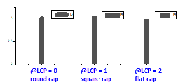
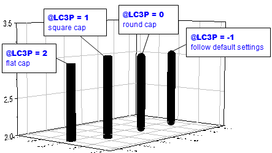
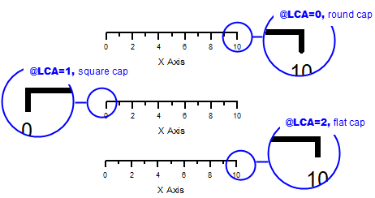
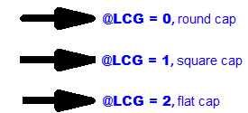
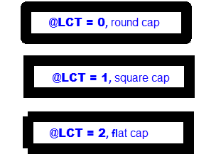

Letztes Update: 22.12.2019
Die meisten Linien in Origin, wie 2D- und 3D-Kurven, Achsen und Hilfsstriche sowie Linienobjekte (einschließlich Pfeile),werden standardmäßig mit runden Formen abgeschlossen.
Wenn Sie das Linienende eckig gestalten möchten, wählen Sie die passende Systemvariable.
| Systemvariablen | Werden wirksam auf | Werte |
|---|---|---|
| LCP | 2D-Liniendiagramme |  |
| LC3P | 3D-Liniendiagramme |  |
| LCA | Achsenlinie und -hilfsstriche in kartesischem 2D-Koordinatensystem |  |
| LCAL | Achsenlinie und -hilfsstriche in einem beliebigen 2D-Koordinatensystem |
@LCAL = -2:
@LCAL = -1:
|
| LCG | Linienende von Pfeil, Linie und Polylinie |  |
| LCT | Linie des Rahmens um Text und Legende |  |
| LCR | Linie von rechteckigen Objekten |
@LCR = 0: rundes Ende |
Um die Systemvariablen festzulegen:
Schlüsselwörter:eckig, rund, Linienenden, Legendenrahmen, Linienobjekt, Pfeil, Rechteck, Ende der Achsenlinie